A continuación se darán las pautas para crear un tablero con el
paquete de R flexdashboar.
Cree una carpeta tablero1. En ella guarde la base de datos cerveza.csv
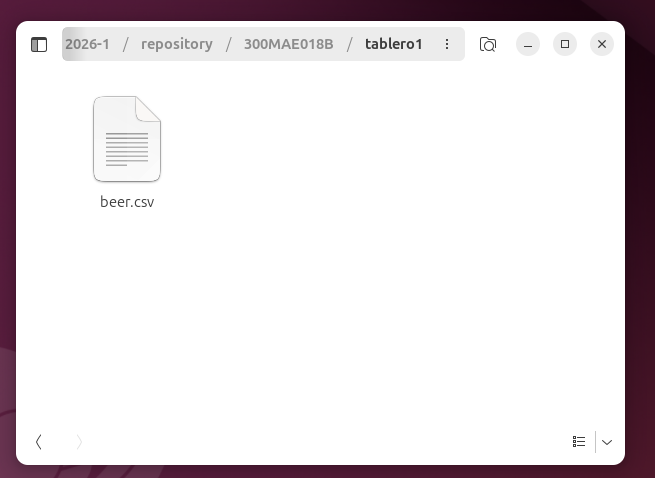
Abra RStudio y cree un nuevo documento Rmarkdown con formato tablero
File/ New file / R Markdown
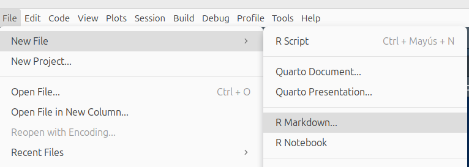
Se abrirá una nueva ventana
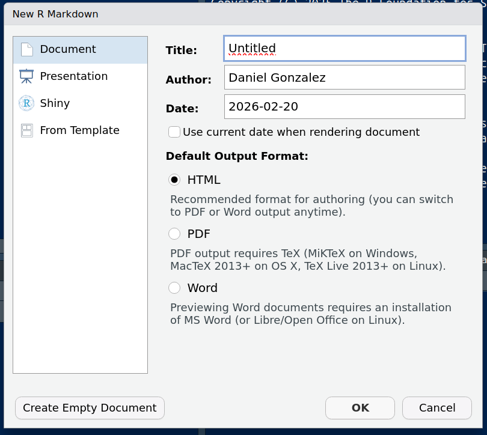
Cambie los parametros de la ventana
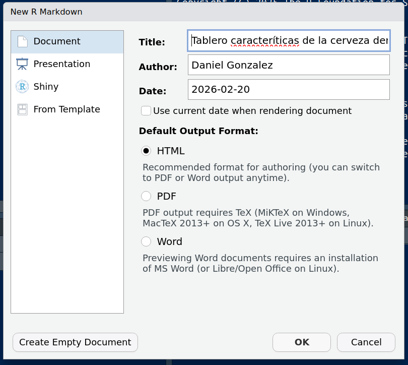
En From Templete marque Flex Dashboard {fkexdashboard} y OK
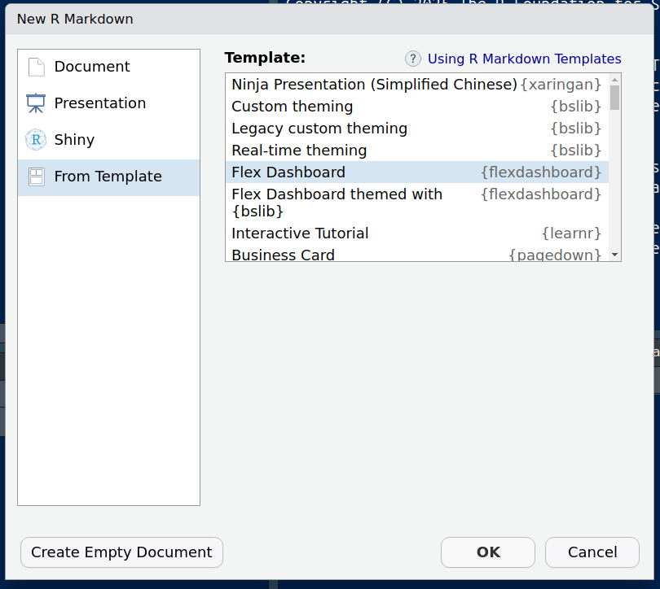
Produce la siguiente plantilla:
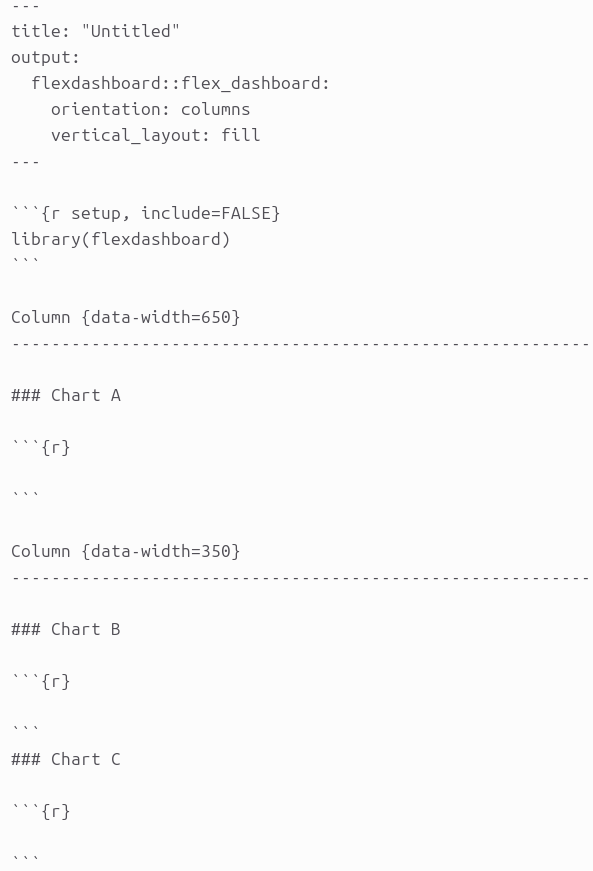
Renderizamos (construimos el tablero en formato html) danto ente en la figural de obillo Knit
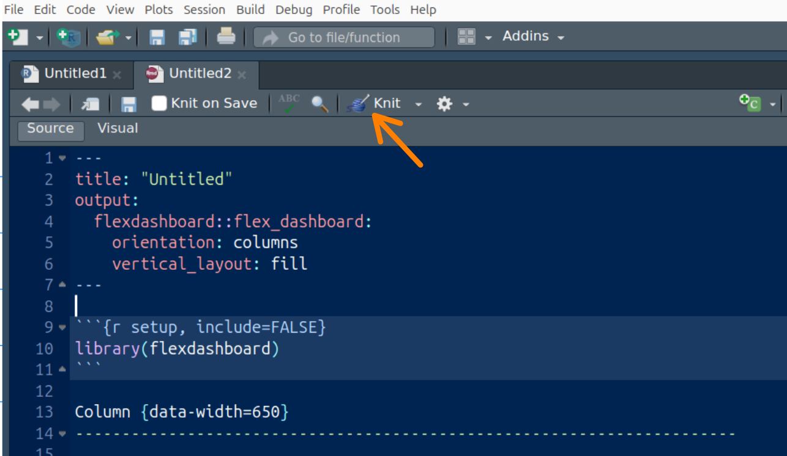
Se le dá nombre al archivo y se guarda Save
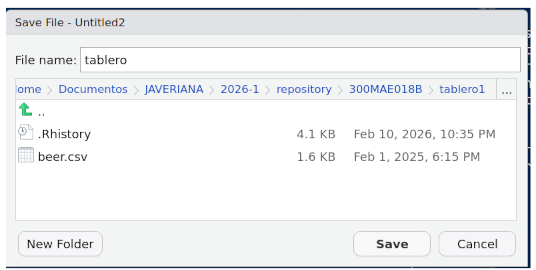
Tenemos la platilla renderizada del tablero
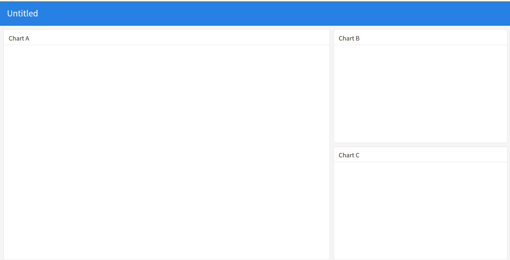
Cargar la base de datos desde el bloque setup
Primero cargamos la base de datos desde la ventana
Files. Damos doble clik sobre la base y marcamos Import
Dataset
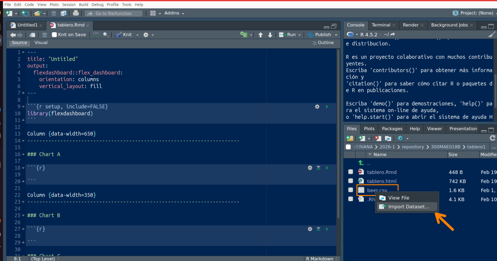
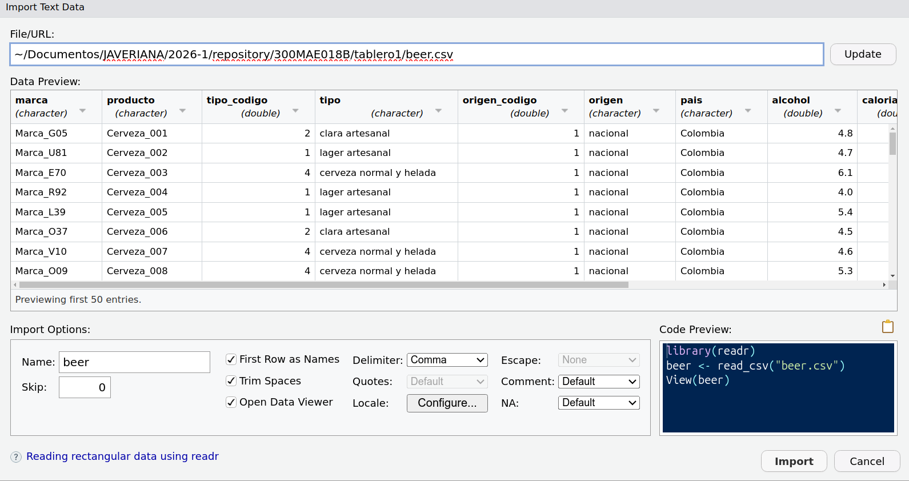
Copiamos el código ubicado en la ventana Code Preview, en el bloque inicial setup del tablero
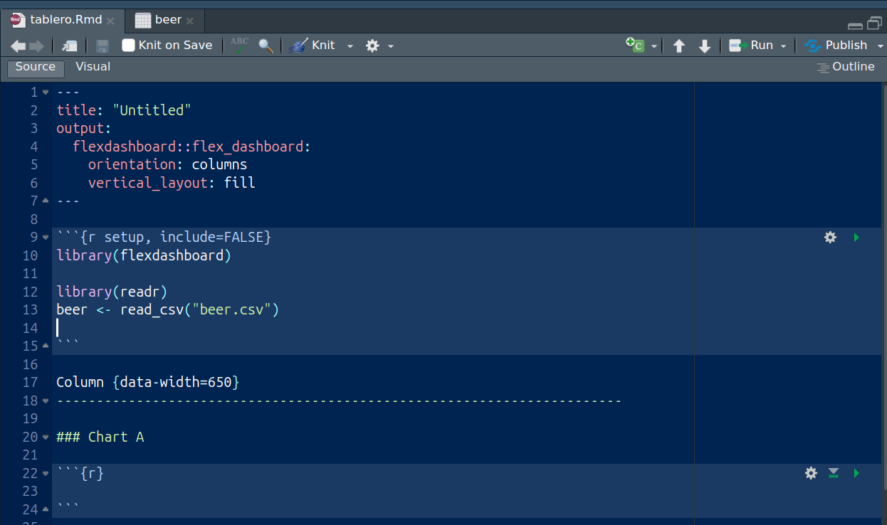
Ya tenemos la base de datos para que funcione dentro del tablero
Configuración de los espacios
Vamos a diagramar el tablero en tres columnas. La primera para las variables cualitativas, la segunda para las variables cuantitativas y combinaciones y la tercera columan para cajas de indicadores. Dejaremos un ancho de 450, 450 y 100 para las columas
En el siguiente enlace encontrarán varias configuraciones y ayudas para lo relacionado con las cajas : https://pkgs.rstudio.com/flexdashboard/articles/using.html
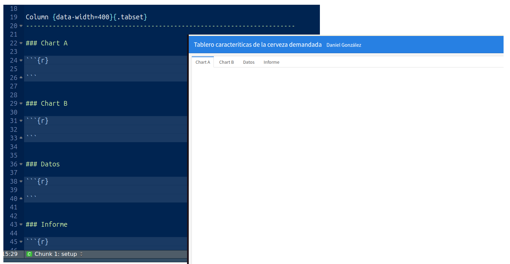
Agregamos al final de la fila 19 : {.tabset} , esto
genra dobles pantallas con pestañas en la parte superior. De igual
manera se procede con la otra columna
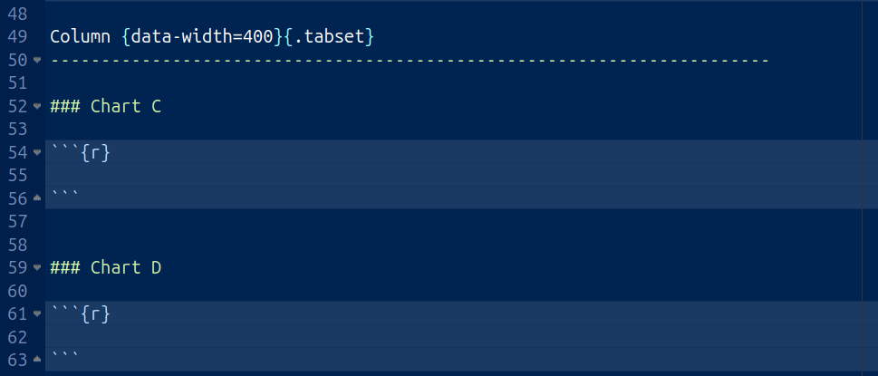
Finalmente se colocan las cajas en la última columna
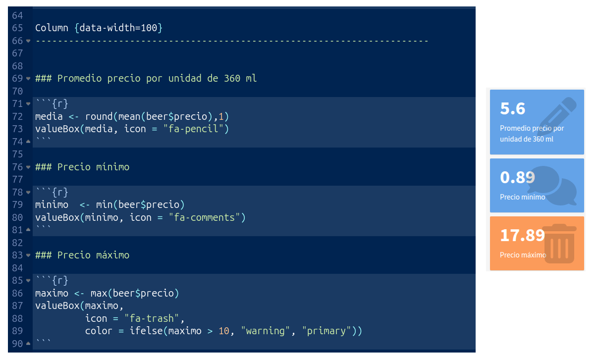
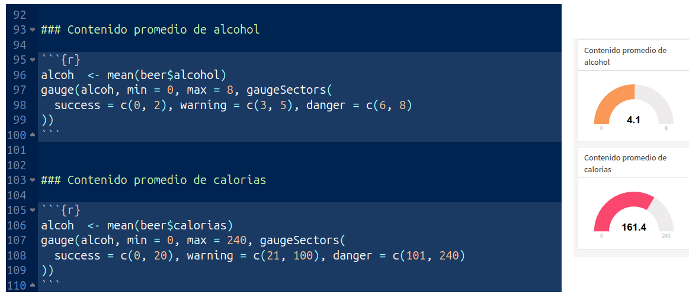
Ahora a incorporar los gráficos, la tabla y el informe
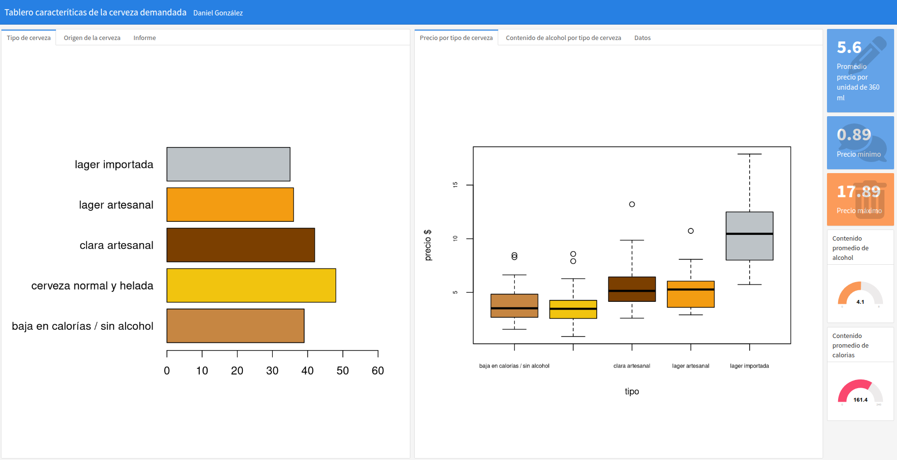